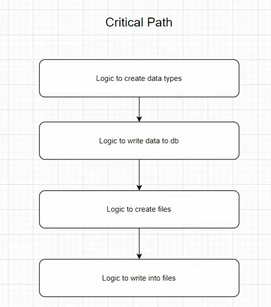
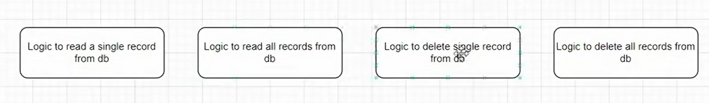
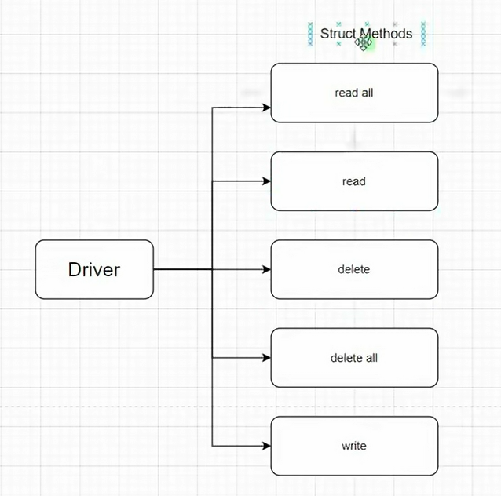
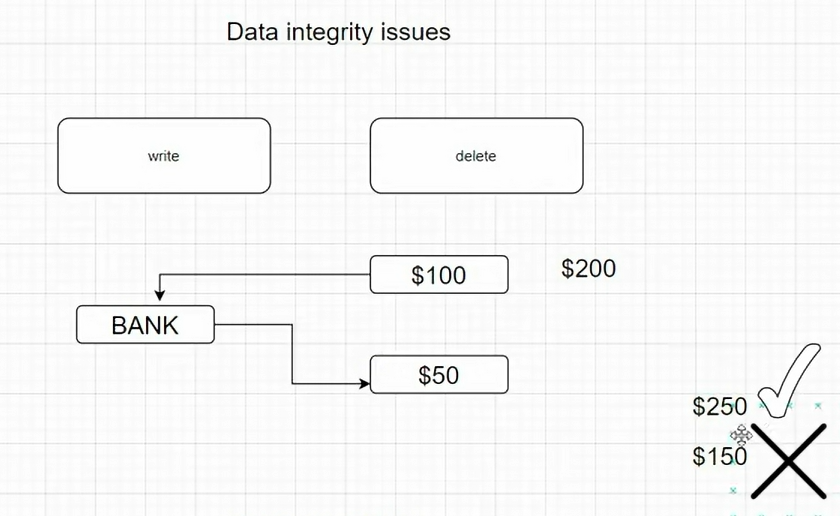
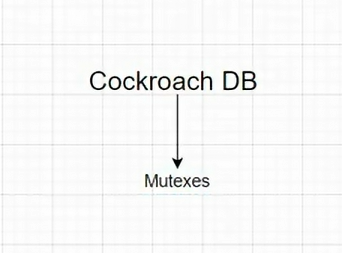
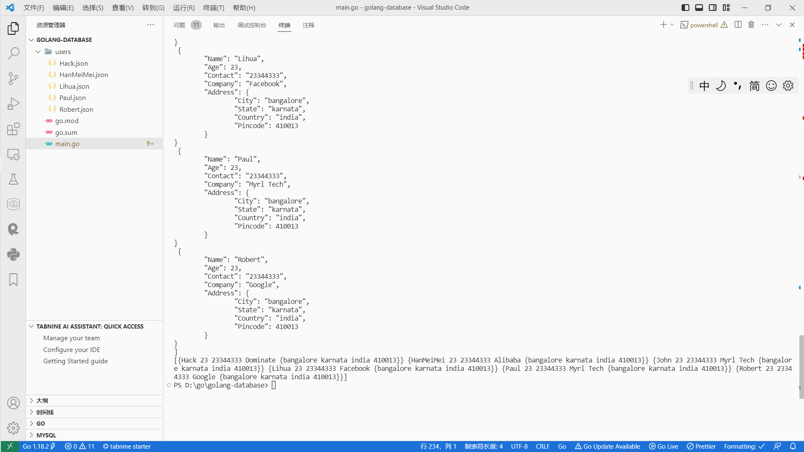

init


mkdir golang-database
go mod init github.com/akhil/golang-database
1
package main
import (
"encoding/json"
"fmt"
"os"
"os/user"
"path"
"sync"
)
const Version = "1.0.1"
type Address struct {
City string
State string
Country string
Pincode json.Number
}
type User struct {
Name string
Age json.Number
Contact string
Company string
Address Address
}
func main() {
dir := "./"
db, err := New(dir, nil)
if err != nil {
panic(err)
}
employees := []User{
{"John", "23", "23344333", "Myrl Tech", Address{"bangalore", "karnata", "india", "410013"}},
{"Paul", "23", "23344333", "Myrl Tech", Address{"bangalore", "karnata", "india", "410013"}},
{"Robert", "23", "23344333", "Google", Address{"bangalore", "karnata", "india", "410013"}},
{"John", "23", "23344333", "Facebook", Address{"bangalore", "karnata", "india", "410013"}},
{"John", "23", "23344333", "Alibaba", Address{"bangalore", "karnata", "india", "410013"}},
{"John", "23", "23344333", "Dominate", Address{"bangalore", "karnata", "india", "410013"}},
}
for _, value := range employees {
db.Write("users", value.Name, User{
Name: value.Name,
Age: value.Age,
Contact: value.Contact,
Company: value.Company,
Address: value.Address,
})
}
records, err := db.ReadAll("users")
if err != nil {
panic(err)
}
fmt.Println(records)
allusers := []User{}
for _, f := range records {
employeeFound := User{}
// 反序列化
if err := json.Unmarshal([]byte(f), &employeeFound); err != nil {
panic(err)
}
allusers = append(allusers, employeeFound)
}
fmt.Println((allusers))
if err := db.Delete("user", "john");err!=nil{
panic(err)
}
if err := db.Delete("user","");err!=nil{
panic(err)
}
}
2
package main
import (
"encoding/json"
"fmt"
"io/ioutil"
"os"
"path/filepath"
"sync"
"github.com/jcelliott/lumber"
)
const Version = "1.0.1"
type (
Logger interface {
Fatal(string, ...interface{})
Error(string, ...interface{})
Warn(string, ...interface{})
Info(string, ...interface{})
Debug(string, ...interface{})
Trace(string, ...interface{})
}
Driver struct {
// 互斥锁
mutex sync.Mutex
mutexes map[string]*sync.Mutex
dir string
log Logger
}
)
type Options struct {
Logger
}
func New(dir string, options *Options) (*Driver, error) {
dir = filepath.Clean(dir)
opts := Options{}
if options != nil {
opts = *options
}
if opts.Logger == nil {
opts.Logger = lumber.NewConsoleLogger((lumber.INFO))
}
driver := Driver{
dir: dir,
mutexes: make(map[string]*sync.Mutex),
log: opts.Logger,
}
if _, err := os.Stat(dir); err != nil {
opts.Logger.Debug("Using '%s' (database already exists)\n", dir)
return &driver, nil
}
opts.Logger.Debug("Creating the database at '%s'...\n", dir)
return &driver, os.MkdirAll(dir, 0755)
}
func (d *Driver) Write(collection, resource string, v interface{}) error {
// collection标记一个互斥锁
if collection == "" {
return fmt.Errorf("Missing collection - no place to save record!")
}
// resource表示一个json文件的名字
if resource == "" {
return fmt.Errorf("Missing resource - unable to save record (no name)!")
}
mutex := d.getOrCreateMutex(collection)
mutex.Lock()
defer mutex.Unlock()
dir := filepath.Join(d.dir, collection)
fnlPath := filepath.Join(dir, resource+".json")
tmpPath := fnlPath + ".tmp"
if err := os.MkdirAll(dir, 0755); err != nil {
return err
}
// 转json
b, err := json.MarshalIndent(v, "", "\t")
if err != nil {
return err
}
b = append(b, byte('\n'))
// 写入文件
if err := ioutil.WriteFile(tmpPath, b, 0644); err != nil {
return err
}
return os.Rename(tmpPath, fnlPath)
}
func (d *Driver) Read(collection, resource string, v interface{}) error {
// collection标记一个互斥锁
if collection == "" {
return fmt.Errorf("Missing collection - unable to read!")
}
// resource表示一个json文件的名字
if resource == "" {
return fmt.Errorf("Missing resource - unable to save record (no name)!")
}
record := filepath.Join(d.dir, collection, resource)
if _, err := stat(record); err != nil {
return err
}
// 读取
b, err := ioutil.ReadFile(record + ".json")
if err != nil {
return err
}
return json.Unmarshal(b, &v)
}
func (d *Driver) ReadAll(collection string) ([]string, error) {
// collection标记一个互斥锁
if collection == "" {
return nil, fmt.Errorf("Missing collection - unable to read!")
}
// 文件所在目录
dir := filepath.Join(d.dir, collection)
if _, err := stat(dir); err != nil {
return nil, err
}
files, _ := ioutil.ReadDir(dir)
var records []string
for _, file := range files {
b, err := ioutil.ReadFile(filepath.Join(dir, file.Name()))
if err != nil {
return nil, err
}
records = append(records, string(b))
}
return records, nil
}
func (d *Driver) Delete(collection, resource string) error {
path := filepath.Join(collection, resource)
mutex := d.getOrCreateMutex(collection)
mutex.Lock()
defer mutex.Unlock()
dir := filepath.Join(d.dir, path)
switch fi, err := stat(dir); {
case fi == nil, err != nil:
return fmt.Errorf("unable to find file or directory named %v\n", path)
case fi.Mode().IsDir():
return os.RemoveAll(dir)
case fi.Mode().IsRegular():
return os.RemoveAll(dir + ".json")
}
return nil
}
func (d *Driver) getOrCreateMutex(collection string) *sync.Mutex {
d.mutex.Lock()
defer d.mutex.Unlock()
m, ok := d.mutexes[collection]
if !ok {
m = &sync.Mutex{}
d.mutexes[collection] = m
}
return m
}
func stat(path string) (fi os.FileInfo, err error) {
if fi, err = os.Stat(path); os.IsNotExist(err) {
fi, err = os.Stat(path + ".json")
}
return
}
type Address struct {
City string
State string
Country string
Pincode json.Number
}
type User struct {
Name string
Age json.Number
Contact string
Company string
Address Address
}
func main() {
dir := "./"
db, err := New(dir, nil)
if err != nil {
panic(err)
}
employees := []User{
{"John", "23", "23344333", "Myrl Tech", Address{"bangalore", "karnata", "india", "410013"}},
{"Paul", "23", "23344333", "Myrl Tech", Address{"bangalore", "karnata", "india", "410013"}},
{"Robert", "23", "23344333", "Google", Address{"bangalore", "karnata", "india", "410013"}},
{"Lihua", "23", "23344333", "Facebook", Address{"bangalore", "karnata", "india", "410013"}},
{"HanMeiMei", "23", "23344333", "Alibaba", Address{"bangalore", "karnata", "india", "410013"}},
{"Hack", "23", "23344333", "Dominate", Address{"bangalore", "karnata", "india", "410013"}},
}
for _, value := range employees {
// 创建users文件夹,里面存value.Name.json文件,每条记录作为一个json文件
db.Write("users", value.Name, User{
Name: value.Name,
Age: value.Age,
Contact: value.Contact,
Company: value.Company,
Address: value.Address,
})
}
records, err := db.ReadAll("users")
if err != nil {
panic(err)
}
fmt.Println(records)
allusers := []User{}
for _, f := range records {
employeeFound := User{}
// 反序列化
if err := json.Unmarshal([]byte(f), &employeeFound); err != nil {
panic(err)
}
allusers = append(allusers, employeeFound)
}
fmt.Println((allusers))
if err := db.Delete("users", "john"); err != nil {
panic(err)
}
// 删除所有
if err := db.Delete("users", ""); err != nil {
panic(err)
}
}
